Você pode ver a extensão das mudanças feitas na branch de teste do projeto Phonetic Website listando o conteúdo do diretório de trabalho:
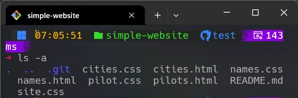
Todos os arquivos CSS foram movidos um nível para cima e o diretório style não existe mais.
Agora vamos ver o poder das branches.
Vamos voltar para a branch main usando o comando git checkout e listar o conteúdo novamente:
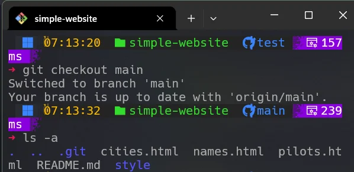
Como você pode ver, o conteúdo do diretório de trabalho foi restaurado. O diretório de estilo está de volta, contendo todos os arquivos CSS.
Como isso é possível?
Toda vez que você troca de branch, o Git busca no banco de dados do repositório o conteúdo do diretório de trabalho do último commit daquela branch.
Quando você roda o comando git checkout <branch>, o ponteiro HEAD se move para o último commit da branch escolhida.
Abaixo está uma ilustração gráfica do processo de troca. Na primeira imagem, a branch special2 é a branch atual.
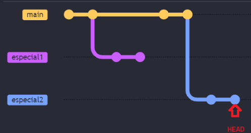
A linha representa o ramo principal main, com cada commit mostrado como um círculo.
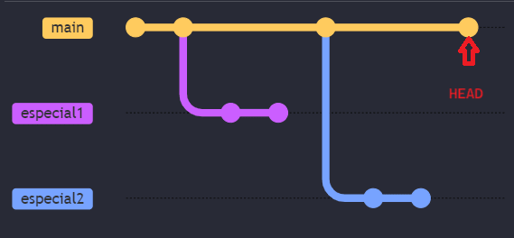
Após o comando git checkout main, o ponteiro HEAD se move para o último commit da branch main.
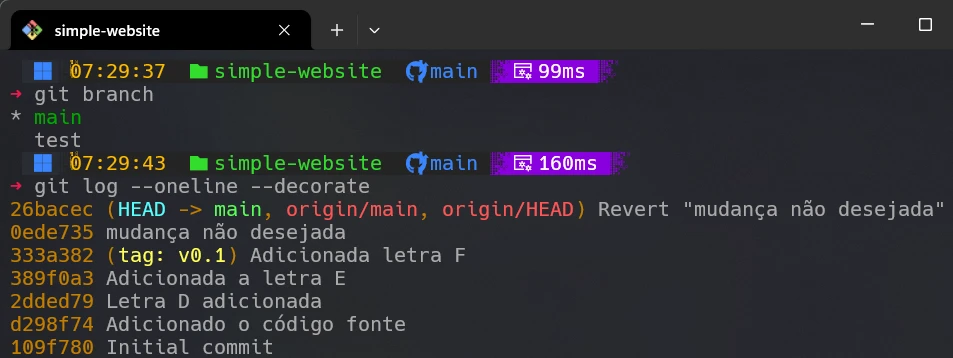
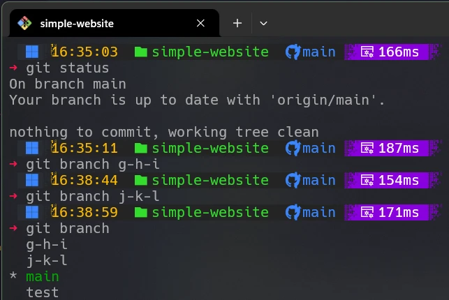
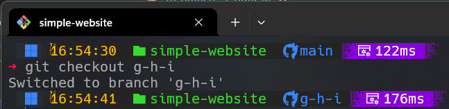
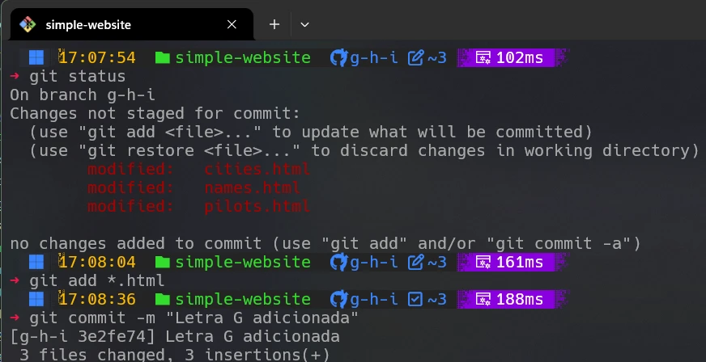
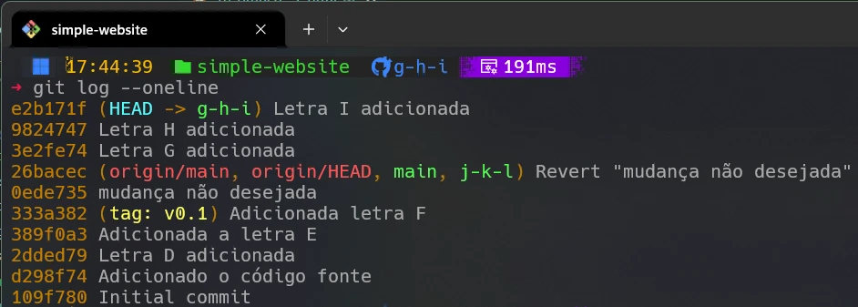
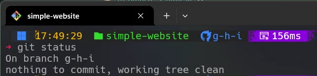
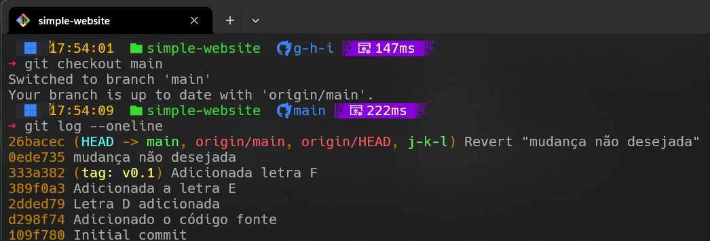
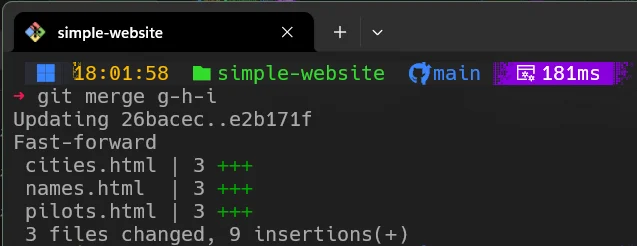
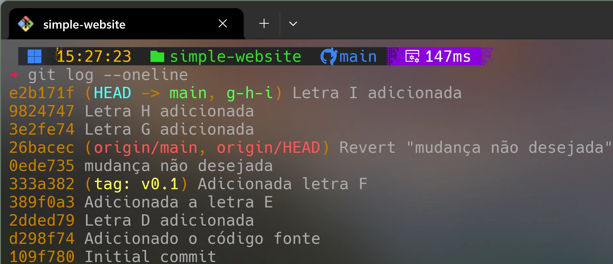
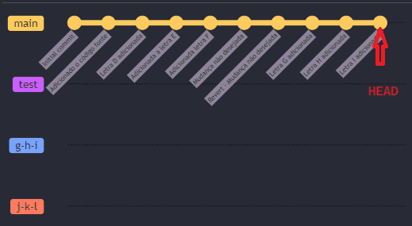
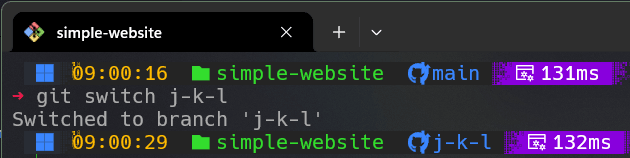
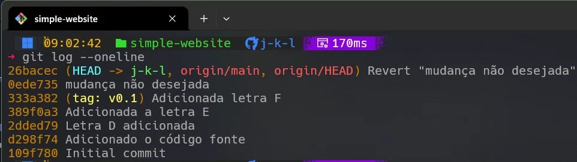
Exercício
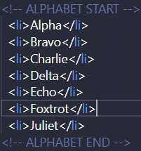
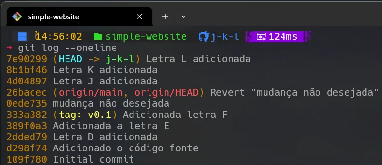
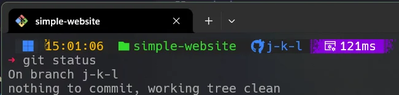
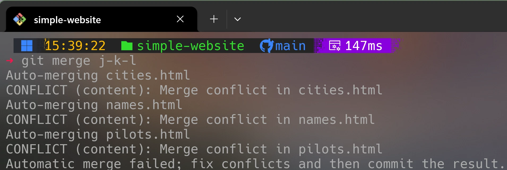
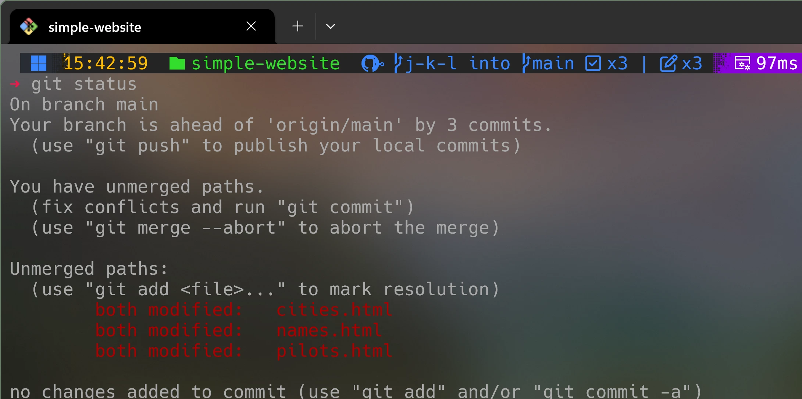
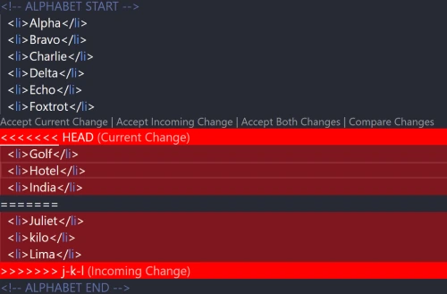
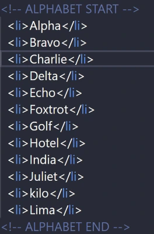
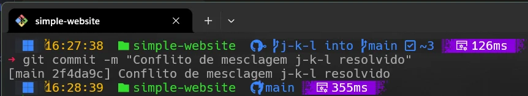
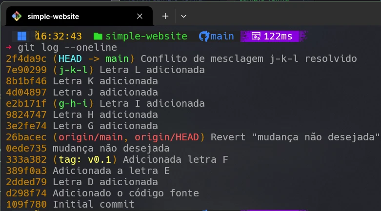
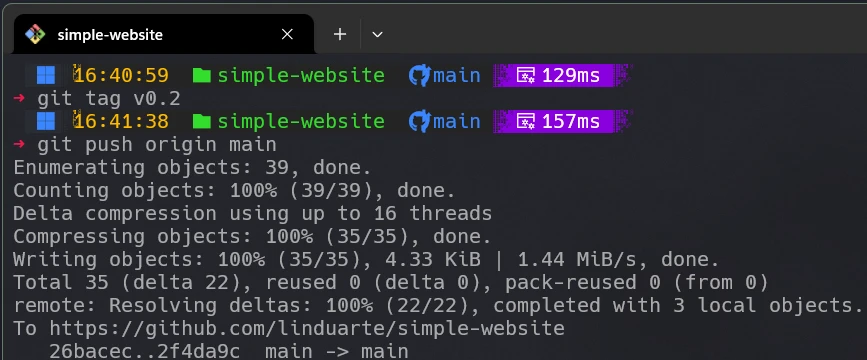
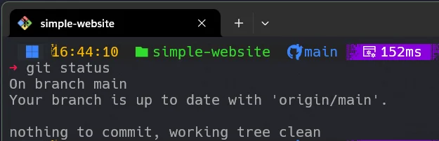
Abaixo está o diagrama Mermaid representando a evolução dos commits.
gitGraph
commit id: "Initial commit"
commit id: "Adicionado o código fonte"
commit id: "Adicionada a letra D"
commit id: "Adicionada a letra E"
commit id: "Adicionada a letra F" tag: "v0.1"
commit id: "mudança não desejada"
commit id: "Revert mudança não desejada" type: REVERSE
commit id: "Letra G adicionada"
commit id: "Letra H adicionada"
branch g-h-i
commit id: "Letra I adicionada"
checkout main
branch j-k-l
commit id: "Letra J adicionada"
commit id: "Letra K adicionada"
commit id: "Letra L adicionada"
checkout main
merge g-h-i
merge j-k-l
commit id: "Conflito de mesclagem j-k-l resolvido" tag: "v0.2"